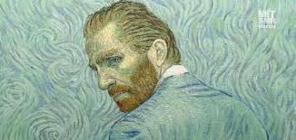

VAN GOGH
Un poco mas...
Biografia
Vincent van Gogh (1853-1890) Fue un pintor neerlandés postimpresionista por colores vibrantes y pinceladas expresivas, revolucionó el arte moderno. A pesar de crear más de 2000 obras, solo vendió una en vida.
Su estilo evolucionó del realismo en una pintura más emocional e intensa, con influencias e impresionismo y el arte japonés. Obras como la noche estrellada y los girasoles reflejan su lucha contra la enfermedad mental.
Afectado por crisis emocionales, se internó en un hospital psiquiátrico y en 1890, murió a los 37 años por una herida autoinfligida punto aunque en vida fue incomprendido, hoy es uno de los artistas más influyentes de la historia